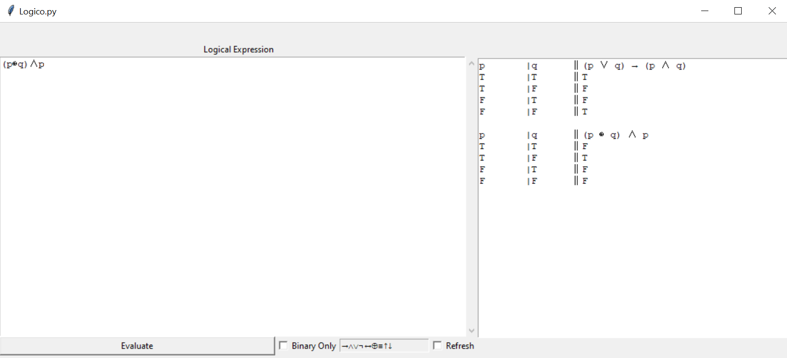
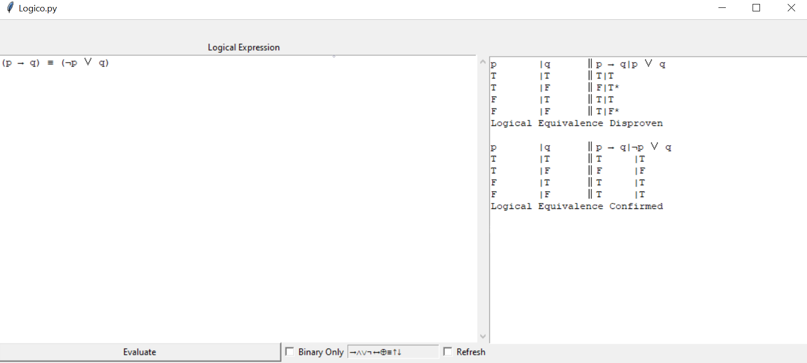

Created as a tool for my Boolean Logic and Discrete Math classes, Logico is a boolean logic calculator that can create truth tables and crunch logical equivalences between two statements. When manually crunching truth/bit tables for boolean logic or binary equations, small errors can easily be made, so having Logico as a reference to check was helpful as I learned the laws of logic that can be used to prove equivalences without crunching.
Logico
Python Boolean/Binary Logic Calculator
Visit The Github Page

